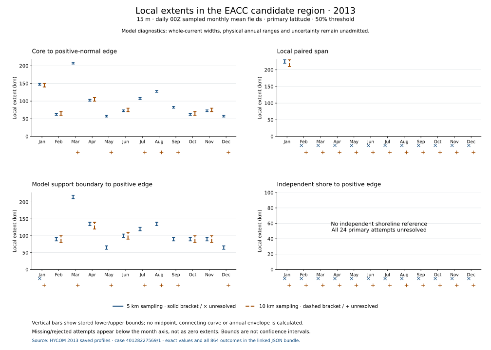

Current measurement research · East African Coastal candidate region
Local extent evidence
Explore all 72 source cases and 864 attempted extents from the 2013 monthly mean fields at 15 m. These are local model diagnostics. Physical current boundaries, whole-current widths, annual ranges, and state intersections remain unresolved.
Loading the small evidence snapshot…
Monthly primary-case evidence
Bars show retained lower and upper extent bounds for the 5 km and 10 km sampling cases. Missing outcomes are shown below the axes. Bounds describe source-scale support; they are not physical uncertainty intervals.

Query retained outcomes
JSON query and available fields
Available fields
Selected evidence
Retained record
Original source case
Source and scope
The investigated current name identifies the research target. It does not certify that these sampled edges are current boundaries. The positive normal is not verified as offshore. Physical uncertainty and whole-current width remain null.
- Exact scalar snapshot (836 KB)
- Geographic evidence review
- Scientific case outcome
- Verified query-engine provenance